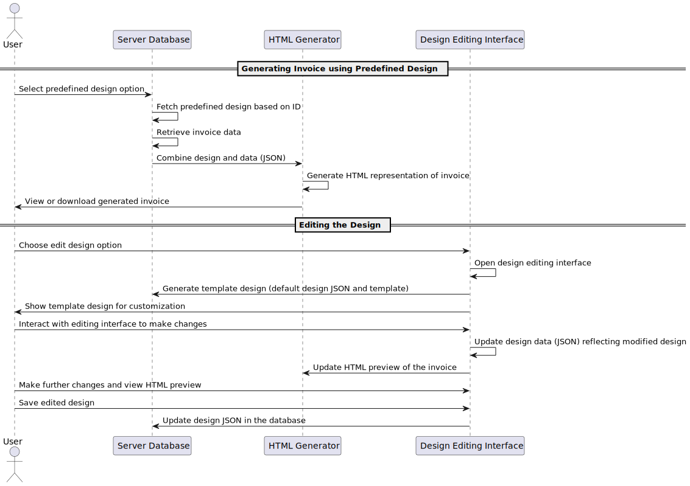
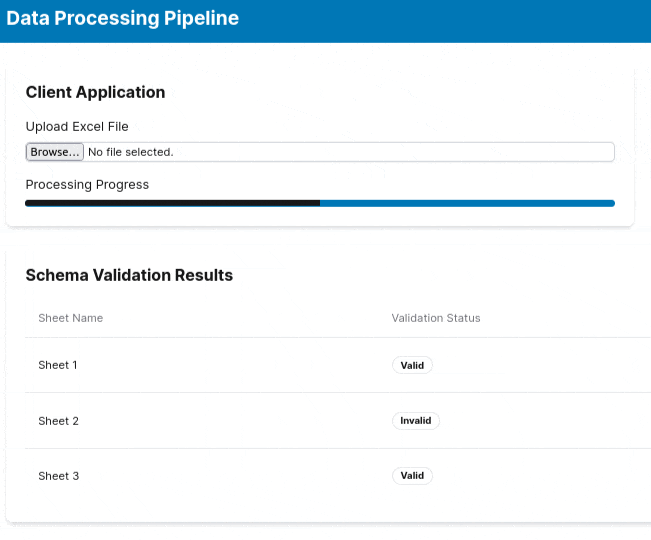
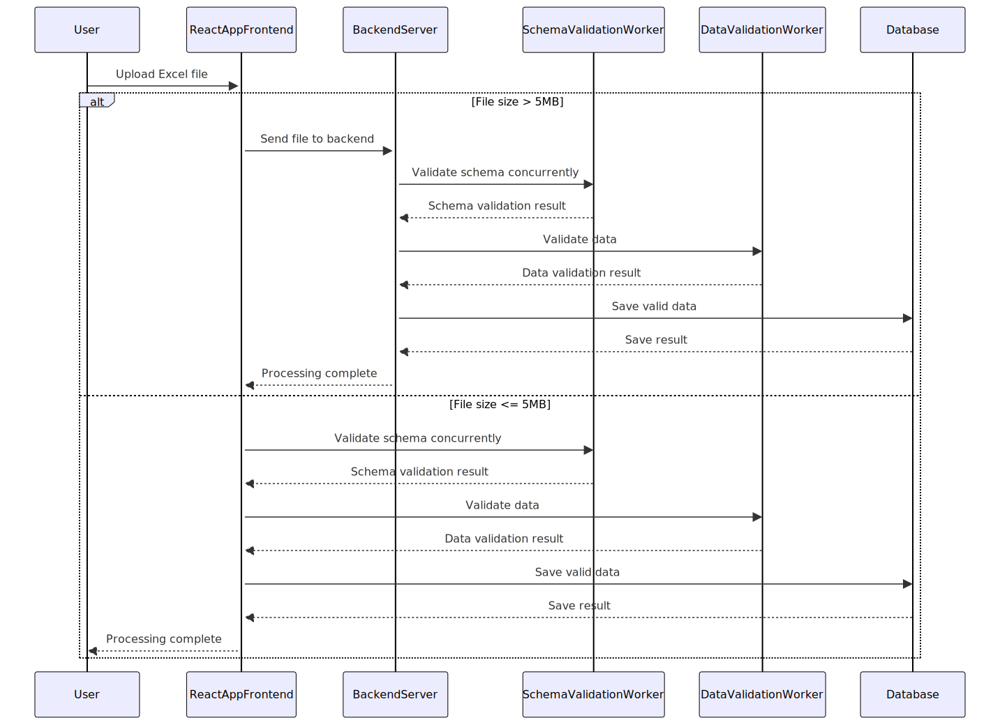
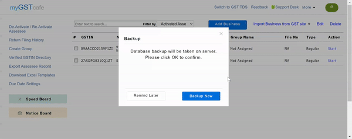
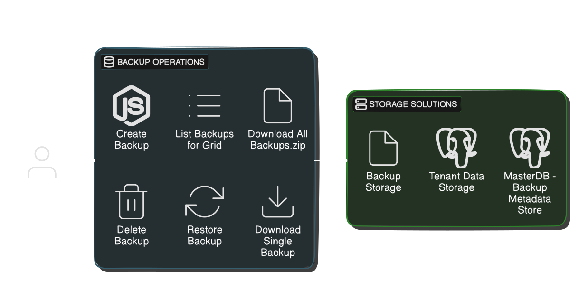
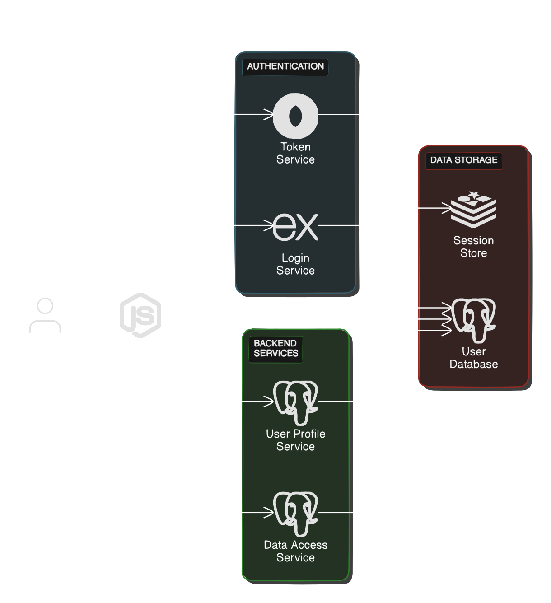

printInvoice pic
printInvoice intro


- The process involves two choices: generating invoices with predefined designs or editing designs.
- For the first option, users select a predefined design, and the system fetches this design from the database. It combines the design with invoice data, generates HTML, and allows the user to view or download the invoice.
- The second choice involves design editing. Users open a design editor, and a template design is created using default JSON. Users customize the design with real-time previews, save their changes as the new default JSON in the database when satisfied.

Streamlined Framework for Excel Data Processing: Validation, Categorization, and Storage

- Two workers are used: Schema Validation Worker and Data Validation Worker.
- The Data Validation Worker receives the file and data validation function. The flow: Excel file is split into sheets, Schema Validation Worker checks them concurrently. Sheets then go for data validation based on schema results.
- After Data Validation, data is categorized as 'Valid Data' or 'Invalid Data.' Valid data is stored in the database, while invalid data is returned to the client app for correction by the user. The corrected data goes through validation again.

User data backup & restore module.
Database backup system for the multi-tenant architecture enables each tenant to create, list, download, delete, and restore their own data backups.

- Tenants can generate backups, view all backups, download individual or all backups in ZIP format, and remove obsolete backups.
- The restore process includes safeguards by creating temporary backups to prevent data loss.
- This robust system ensures data integrity, security, and accessibility for each tenant.

User session management
JWT authentication system for user authentication within the application.
- The JWT session management system authenticates users by issuing a JWT token with a fixed expiration time, which is stored in a cookie.
- If the user opts for "keep me logged in," a refresh token is also generated and stored securely in local storage.
- When the JWT token expires, the client can use the refresh token to request a new JWT token.
- On logout, the JWT token is cleared from the cookie, and any refresh token is removed from local storage.